Export Figures for Use in Other Applications
To export figures and plots for use in documents and other applications, use the
exportgraphics function to save your content in a file, or use the
copygraphics function to copy your content to the clipboard. Both
functions enable you to capture figures and plots with the appropriate size, resolution,
and aspect ratio for your application. You can also specify a margin of padding, a
background color, and control axes tick placement. The examples in this topic use the
exportgraphics function, but you can apply the same concepts
and arguments when using the copygraphics function.
When you use the exportgraphics and
copygraphics functions, UI components and containers, such as
panels, that are next to your plot are excluded from the saved content. For these cases,
use the exportapp
function instead.
Specify Graphics to Export
To export a plot to a file, use the exportgraphics function.
Specify the parent figure as the first argument. For example, create a figure that
is 535-by-325 pixels in size. Then create a contour plot and export the figure as a
PNG file. Specifying the figure enables you to capture all axes objects directly
parented to the figure and their contents. If your figure contains annotations,
exportgraphics captures the annotations as well.
f = figure;
f.Position(3:4) = [535 325];
contour(peaks)
colorbar
exportgraphics(f,"contour.png")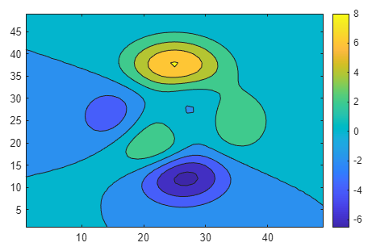
Alternatively, you can specify an axes object instead of a figure as the first
argument to the exportgraphics function. In this case, the
resulting file is the same because the figure contains only one axes
object.
ax = gca;
exportgraphics(ax,"contour.png")You can also export a tiling of plots by passing a
TiledChartLayout object as the first argument. For example,
create a tiling of two plots and export the tiled chart layout as a PNG file.
f = figure;
f.Position(3:4) = [650 300];
t = tiledlayout(1,2);
ax1 = nexttile;
plot([4 3 2; 3 2 1],LineWidth=2)
ax2 = nexttile;
contourf(peaks)
exportgraphics(t,"twoplots.png")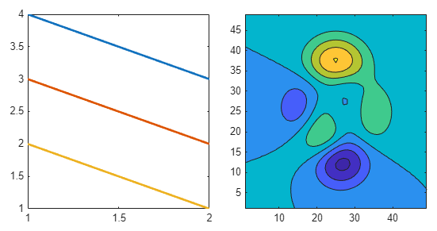
To export one plot from a tiled chart layout, use the
nexttile function to get the axes object and pass it to the
exportgraphics function. For example,
nexttile(2) returns the axes in the second
tile.
ax = nexttile(2);
exportgraphics(ax,"secondplot.png")Specify Resolution
To export a plot as an image at a specific resolution, use the
exportgraphics function with the
Resolution name-value argument. By default, images are
saved at 150 dots per inch (DPI).
A common resolution for printed output is 300 DPI. For graphics on the web, a
typical resolution is 72 DPI. To export a plot using the same resolution as
MATLAB® uses, use the value of the ScreenPixelsPerInch
property of the graphics root (groot) object. Regardless of the
resolution you specify, the pixel dimensions of the final image are approximately
the width and height of the figure multiplied by the resolution. For instance,
exporting a 4-inch-wide plot at 300-DPI results in a 1200-pixel-wide image.
For example, create a figure that is 535-by-325 pixels in size. Then create a bar chart and export the chart using the same resolution as MATLAB uses.
f = figure; f.Position(3:4) = [535 325]; bar([1 11 7 8 2 2 9 3 6]) sppi = get(groot,"ScreenPixelsPerInch"); exportgraphics(f,"barchart.png",Resolution=sppi)
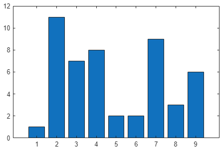
You can export plots of a specific size by specifying the resolution as well as the width and height. For example, this code saves the contents of a figure as a 300-DPI, 3-inch square (or 900-pixels square) image. More details on specifying the width and the height are provided in the following sections.
exportgraphics(gcf,"bar-3inch-300dpi.png",Units="inches", ... Width=3,Height=3,Resolution=300)
Specify Size
The exportgraphics function has four name-value arguments
that enable you to control the dimensions and aspect ratio when exporting a plot:
Width, Height,
Units, and PreserveAspectRatio.
A simple way to control the size of the output file is to specify the length of
one dimension using either the Width or the
Height name-value argument. MATLAB adjusts the dimension you do not specify to preserve the original
aspect ratio. Specify the Units name-value argument when you
specify the Width or Height values.
When you specify the size, also adjust the Position property
of the figure so that the width and height of the figure are similar to the desired
width and height of the exported file. The Position property is
a four-element vector. The width and height values are the last two elements of the
vector (in pixel units by default). Make this adjustment before calling
exportgraphics.
For example, create a figure that is 535-by-325 pixels in size. Create a bar chart and save it as a PNG file that is approximately 500 pixels wide. MATLAB adjusts the height to be 334 pixels to maintain the original aspect ratio. By default, the content is tightly cropped around the axes. The gray border around the image outlines the captured region. The border is not part of the saved image.
f = figure; f.Position(3:4) = [535 325]; bar([1 11 7 8 2 2 9 3 6]) exportgraphics(f,"bar500.png",Units="pixels",Width=500)
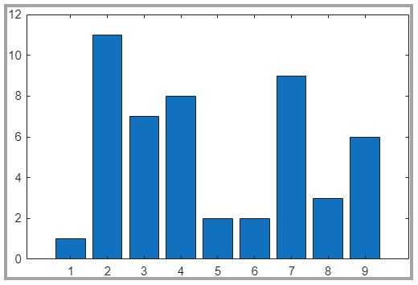
You can also specify both the Width and the
Height values. This code changes the aspect ratio to create
a tightly cropped, square image.
exportgraphics(f,"barsquare.png", ... Units="pixels",Width=400,Height=400)

If you want to preserve the original aspect ratio of the chart, specify the
PreserveAspectRatio name-value argument as
"on". This code creates a square image that includes padding
to preserve the original aspect ratio of the bar chart.
exportgraphics(f,"barsquare-padded.png", ... Units="pixels",Width=400,Height=400,PreserveAspectRatio="on")
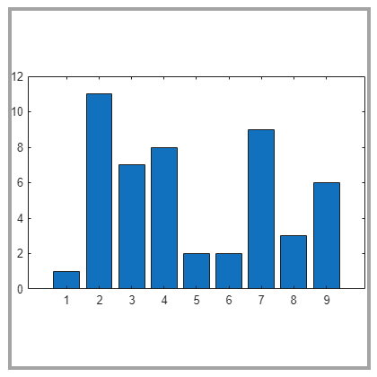
If you export an image file and specify the width or height using nonpixel units,
such as inches or centimeters, be sure to specify the
Resolution name-value argument. Otherwise, the output has a
default resolution of 150 DPI, which might result in a different size than is
required for your application.
For example, create a bar chart and save it as a 3-inch-square image using the same resolution as MATLAB uses.
f = figure; f.Position(3:4) = [300 300]; bar([1 11 7 8 2 2 9 3 6]) sppi = get(groot,"ScreenPixelsPerInch"); exportgraphics(f,"bar3inchsquare.png", ... Units="inches",Width=3,Height=3, ... Resolution=sppi)
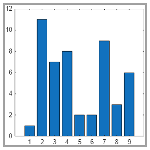
An alternative way to control the size is to save the content as a vector graphics
file. Then you can resize the content in your final application. To save the content
as a vector graphics file, use the exportgraphics function with
the ContentType name-value argument specified as
"vector". For example, create a bar chart and save the figure
as an PDF fragment containing vector graphics. All fonts are included in the PDF
file. The output file looks similar to this image.
f = figure; f.Position(3:4) = [535 325]; bar([1 11 7 8 2 2 9 3 6]) exportgraphics(f,"bar.pdf",ContentType="vector")
You can also export the figure as an SVG file. An SVG file always contains vector
graphics, so you do not need to specify the ContentType
value.
exportgraphics(f,"bar.svg")Specify Padding
You can control the amount of padding around an exported plot by using
exportgraphics with the Padding
name-value argument. By default, the Padding value is
"tight". This value provides minimal padding (unless you
specify the Width and Height values with a
PreserveAspectRatio value of
"on").
For example, create a line plot and export it as a 400-by-300-pixel JPG file using the default padding. The gray border around the image outlines the captured region. The border is not part of the saved image.
f = figure; f.Position(3:4) = [400 300]; plot([4 3 2 1; 3 2 1 4],LineWidth=2) exportgraphics(f,"plot-tight-padding.jpg", ... Units="pixels",Width=400,Height=300)
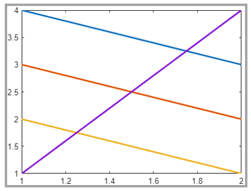
To use the same padding as displayed in the figure, specify the
Padding name-value argument as "figure".
The padding is included in the dimensions you specify. Therefore, the exported plot
is slightly smaller to accommodate the extra padding.
exportgraphics(f,"plot-figure-padding.jpg", ... Units="pixels",Width=400,Height=300, ... Padding="figure")
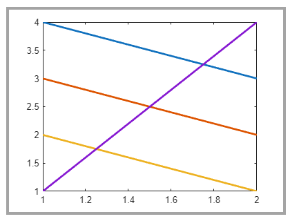
To specify a custom padding value, specify the Padding
name-value argument as a number in the same units as the Width
and Height values. In this case, add 10 pixels to each side of
the plot.
exportgraphics(f,"plot-10px-padding.jpg", ... Units="pixels",Width=400,Height=300, ... Padding=10)
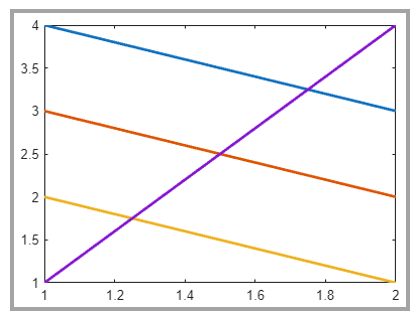
Specify Background Color
By default, the exportgraphics function saves content with a
background color that corresponds to the theme of the figure. You can specify a
different background by setting the BackgroundColor name-value
argument to one of these values:
"current"— Select a color according to the color of the axes parent container (such as a figure or a panel). If the theme of the figure is light, then the background color is white. If the theme is dark, then the background color is dark gray (almost black). If the parent container has a custom color that you set, then the background color matches the custom color."none"— Set the background color to transparent, white, or dark gray (almost black), depending on the value ofContentType:When
ContentType="vector", the background color is transparent.When
ContentType="image", the background color is white for light-themed figures, and dark gray (almost black) for dark-themed figures.
A custom color, specified as an RGB triplet such as
[1 0 0], a hexadecimal color code such as"#FF0000", or a named color such as"red".
For example, create a stem plot and save the figure as a PDF file with a transparent background.
f = figure; f.Position(3:4) = [400 300]; stem(1:10,"filled",LineWidth=2) ylim padded exportgraphics(f,"stem-transparent.pdf",ContentType="vector",... BackgroundColor="none")
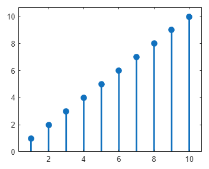
Preserve Axes Limits and Tick Values
Occasionally, the exportgraphics function captures your
content with different axes limits or tick values depending on the font size and the
aspect ratio of the output. To keep the axes limits and tick values from changing,
set the tick value mode and limit mode properties of the axes to
"manual". For instance, when plotting into Cartesian axes,
set the XTickMode, YTickMode,
ZTickMode, XLimMode,
YLimMode, and ZLimMode properties to
"manual".
For example, this code creates a plot and sets the mode properties to
"manual". Then it exports the plot with a significantly
different aspect ratio. The axes limits and tick values are preserved in the output
file.
f = figure; f.Position(3:4) = [400 300]; plot([4 3 2 1; 3 2 1 4],LineWidth=2) % Set the mode properties of the axes ax = gca; ax.XTickMode = "manual"; ax.YTickMode = "manual"; ax.ZTickMode = "manual"; ax.XLimMode = "manual"; ax.YLimMode = "manual"; ax.ZLimMode = "manual"; exportgraphics(f,"eplot-preserveticks.png", ... Units="pixels",Width=200,Height=400)
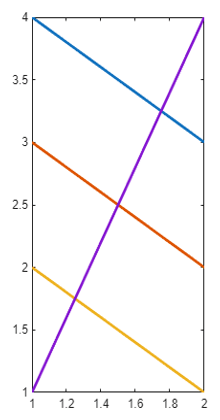
For polar plots, set the RTickMode,
ThetaTickMode, RLimMode, and
ThetaLimMode properties of the polar axes to
"manual".